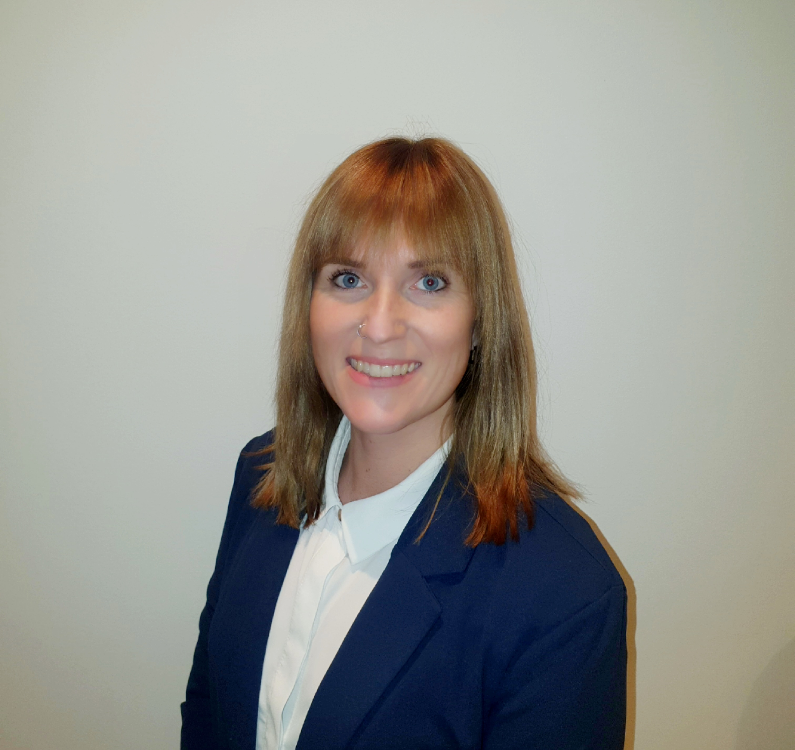
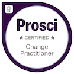

Edrell Engineering AB hjälper företag inom industri, teknik och tillverkning att skapa struktur, driva förbättringsarbete och genomföra förändring med fokus på kvalitet, tydlighet och långsiktiga resultat.
Genom stöd inom projektledning, koordinering, verksamhetsutveckling och kvalitetsarbete hjälper företaget organisationer att omsätta mål och idéer till konkreta aktiviteter som skapar värde i verksamheten.
Oavsett om det handlar om ett enskilt projekt, ett förbättringsinitiativ eller ett större förändringsarbete är målsättningen densamma: att skapa fungerande arbetssätt, tydlig kommunikation och hållbara resultat över tid.
Arbetet präglas av ett pragmatiskt förhållningssätt där människor, processer och verksamhetsmål vägs samman för att skapa lösningar som fungerar i praktiken och inte bara på pappret.
Edrell Engineering AB drivs och ägs av mig, Jennifer Friberg Edrell. Jag drivs av att hjälpa människor och organisationer att skapa framdrift i sina utmaningar, oavsett om det handlar om teknisk utveckling, projektledning eller att genomföra förändringar i en verksamhet.
Jag startade Edrell Engineering AB för att ge mig möjlighet att själv påverka min utveckling, ta mig an nya utmaningar och bidra där jag kan göra störst nytta.
Min bakgrund spänner över flera roller inom teknisk utveckling och industri, däribland mekanikkonstruktion, produktutveckling, projektledning, produktansvar, kvalitet och ledarskap.
Genom mina uppdrag har jag arbetat nära olika funktioner och fått erfarenhet av både tekniska frågeställningar och de processer, samarbeten och förändringar som krävs för att nå gemensamma mål.
Jag har ett helhetsperspektiv och trivs i sammanhang där flera delar behöver samverka. Genom att tydliggöra vad som behöver göras, samordna insatser och följa upp aktiviteter bidrar jag till att arbetet går framåt.
Kärnan i mitt arbetssätt är tillit, samarbete och utveckling.
Tillit handlar för mig om att vara lyhörd, pålitlig och tydlig. Jag tar ansvar för det jag åtar mig, skapar förtroende genom mitt agerande och strävar efter att göra det enkelt för andra att samarbeta med mig.
Samarbete handlar om att förstå olika perspektiv och få människor och funktioner att arbeta mot gemensamma mål. Jag är kommunikativ och prestigelös och tror på att de bästa lösningarna ofta växer fram när olika kompetenser och erfarenheter tas tillvara.
Utveckling handlar om att vara nyfiken, se möjligheter till förbättring och omsätta insikter i handling. Jag tar initiativ, identifierar vad som behöver göras och bidrar med struktur och framdrift för att idéer och beslut ska bli verklighet.
Min Prosci-certifiering inom förändringsledning kompletterar min erfarenhet av projektledning och verksamhetsutveckling. Genom att integrera förändringsledning i projekt och utvecklingsinitiativ stärks förutsättningarna att realisera nyttan av gjorda investeringar och nå önskade resultat snabbare.
Jag trivs i gränslandet mellan människor, processer och teknik där struktur, kommunikation och samarbete är avgörande för att nå uppsatta mål. För mig handlar framgång om att skapa långsiktigt värde, bygga förtroende och hitta lösningar som fungerar i praktiken.


Certifierad Prosci Change Practitioner och utbildad inom ADKAR. Erfarenhet av att stödja förändringsarbete, utveckla arbetssätt och skapa förutsättningar för framgångsrika förändringsprocesser.